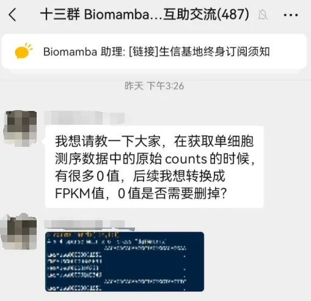
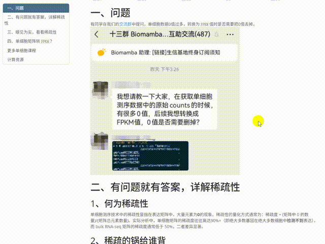

稀疏的单细胞
原文：https://mp.weixin.qq.com/s?__biz=MzAwMzIzOTk5OQ==&mid=2247529675&idx=1&sn=4d16321d68430f9a1c2d20fb77234d24&chksm=9b3c0d9bac4b848d10045533515ce8009c5548e5c7883c7778cd0ed9bf3aec1864f67baef1f8#rd 合集：答读者问
一、问题
有同学在我们的交流群中提问，单细胞数据0值过多，转换为FPKM值时是否需要把0值去掉。

二、有问题就有答案，详解稀疏性
1、何为稀疏性
单细胞测序技术中的稀疏性是指在表达矩阵中，大量元素为0 的现象。稀疏性的量化方式通常为：稀疏度 = (矩阵中 0 的数量)/(矩阵总元素数量)。实际分析中，单细胞矩阵的稀疏度往往高达90%+（即绝大多数基因在绝大多数细胞中检测不到 表达），而 bulk RNA-seq 矩阵的稀疏度通常低于 50%，二者差异显著。
2、稀疏的锅给谁背
单细胞数据的高稀疏性并非随机产生，而是由技术限制和生物学特性共同导致：
(1)生物学因素
- 基因表达的细胞特异性： 多数基因仅在特定细胞类型或状态中表达（如免疫细胞的细胞因子基因仅在激活时表达），在其他细胞中自然为 0。
- 转录本的低丰度： 许多基因（如调控基因）在细胞中的表达量极低，仅少数分子甚至不表达，导致计数为 0。
- 细胞周期或瞬时状态： 基因表达随细胞周期或动态过程（如分化）呈现瞬时性，某一时刻的检测可能恰好捕捉到 “不表达” 的状态。
(2)技术因素
- 扩增偏差： 单细胞测序需对微量RNA（通常每个细胞仅1-10pg）进行扩增，低丰度转录本可能因扩增效率低而丢失，最终表现为0。
- 捕获效率低： 单细胞捕获过程中，RNA分子可能未被有效捕获（如液滴法中细胞与磁珠结合失败），导致基因计数为0。
- 测序深度不足： 为降低成本，单细胞测序的测序深度通常远低于bulk测序（如每个细胞50k-1M reads，而Bulk通常能获得100M reads/样本），低丰度基因可能未被测序覆盖，表现为0。
3、稀疏性对数据分析的影响
(1)、数据存储与计算(算是优点)
高稀疏矩阵若用常规稠密矩阵存储（如 R 中的matrix），会占用大量内存（例如 10 万个细胞 ×3 万个基因的矩阵，稠密 存储(如矩阵、数据框)需约12GB，而稀疏存储仅需数百 MB）。因此，单细胞工具通常采用稀疏矩阵格式（如 R 中的dgCMatrix、Python 中的scipy.sparse）优化存储和计算效率。
(2)、下游分析偏差
- 聚类与分群： 稀疏性可能掩盖细胞间的真实差异，例如低表达基因的 0 值可能被误判为 “不表达”，导致相似细胞被错误分组。
- 差异表达分析： 0 值的大量存在会影响统计模型的假设（如正态分布），需使用针对稀疏数据的方法（如 MAST、DESeq2 的单细胞适配版本）。
- 降维与可视化： 主成分分析（PCA）、t-SNE 等方法对 0 值敏感，直接分析可能导致维度偏差，需先通过标准化（如 log 转换加伪计数）或插补（imputation）处理。
- 生物学解读误区 无法区分 “真 0”（基因确实不表达）和 “假 0”（技术原因导致的表达缺失），可能误判基因的细胞特异性。
4、稀疏性的处理策略
(1)数据预处理优化
- 过滤低质量细胞和低表达基因： 移除检测基因数过少的细胞（可能因捕获失败导致大量 0）和在极少数细胞中表达的基因，减少无效0值。
- 标准化与伪计数： 对表达量加一个小的伪计数（如 1）后再进行 log 转换，避免 0 值对后续计算的干扰（如避免 log (0) 的无穷大问题）。
- 插补（Imputation）方法 基于统计模型推测 0 值的可能表达量，如利用相似细胞（如同一聚类）的基因表达模式填补（代表工具：MAGIC、kNN-smoothing、SAVER）。但需注意：插补可能引入假阳性信号，需谨慎验证。
(2)针对性算法设计
许多单细胞分析工具已内置对稀疏性的适配，例如： 聚类算法 ：Louvain、Leiden算法对稀疏矩阵的处理效率更高；
降维工具 ：UMAP、t-SNE通过优化距离计算减轻0值影响；
差异分析 ：MAST模型直接纳入0值的统计分布（假设表达量服从零膨胀负二项分布）。
三、眼见为实，看看稀疏性
1、scRNA-seq
这里还是单样本分析中的演示数据，pbmc3k为例。让我们来看看稀疏矩阵：
-
- *
library(Seurat)# 加载R包 my_count <- Read10X('hg19/')# 读取矩阵class(my_count)# 查看矩阵对象格式
## [1] "dgCMatrix"
## attr(,"package")
## [1] "Matrix"
*
# 显然，默认存储表达矩阵的对象，就是稀疏矩阵的格式
当然，我们也可以把他转化为”稠密矩阵”
-
-
-
-
- *
-
-
-
# 转化为数据框：my_df <- as.data.frame(my_count)
# 统计矩阵中有多少0值：if_0 <- table(my_df==0)print(if_0)
##
## FALSE TRUE
## 2286884 86105716
- *
# 计算稀疏性if_0['TRUE']/(ncol(my_df)*nrow(my_df))
## TRUE
## 0.9741281
稀疏矩阵和稠密矩阵的内存占用差别就很大了，很多情况下，都不在一个数量级。
*
format(object.size(my_count), units = "MB") # 转换为KB
## [1] "28.5 Mb"
*
format(object.size(my_df), units = "MB") # 转换为KB
## [1] "676.9 Mb"
2、bulk RNA-Seq
这里用我们此前Bulk RNASeq| 转录组实战教程中输出的数据进行演示。可能有些不够严谨，这里的组织并不是pbmc，但是稀疏性的差别远不在一个数量级，这是由于技术因素而不是组织差异造成的。
-
-
- *
-
# 读取本地数据：bulk_count <- read.table('all.sample.counts.txt',header = 1,row.names = 1)# 计算稀疏性：table(bulk_count==0)['TRUE']/(ncol(bulk_count)*nrow(bulk_count))
## TRUE
## 0.09018155
差别很大，bulk数据中大约只有9%的零值，相信大家可以感受到scRNA-seq的稀疏。
四、单细胞矩阵转FPKM？
1、转化过程演示
-
-
-
-
-
- *
-
-
-
-
# 加载必要的包library(Matrix) # 处理稀疏矩阵library(GenomicFeatures) # 从GTF提取基因长度（可选）
# 1. 可从注释包获取基因长度数据library(org.Hs.eg.db)library(biomaRt)
-
-
-
-
-
-
-
-
-
-
-
-
-
-
-
-
-
-
-
-
-
-
-
-
- *
-
-
-
-
-
-
-
-
-
-
-
-
-
-
-
-
-
-
-
-
-
-
-
mart <- useMart("ensembl", dataset = "hsapiens_gene_ensembl")gene_len_df <- getBM(attributes = c("hgnc_symbol", "transcript_length"), mart = mart)gene_len_df <- aggregate(transcript_length ~ hgnc_symbol, data = gene_len_df, FUN = max)colnames(gene_len_df) <- c("gene", "length")
# 2. 确保基因名匹配（稀疏矩阵的行名与gene_len_df的gene列一致）# 提取稀疏矩阵的基因名matrix_genes <- rownames(my_count)# 筛选出矩阵中存在的基因长度gene_len_filtered <- gene_len_df[gene_len_df$gene %in% matrix_genes, ]# 按矩阵基因顺序排序gene_len_filtered <- gene_len_filtered[match(matrix_genes, gene_len_filtered$gene), ]# 处理缺失的基因长度（若有，可填充平均值或过滤）gene_len_filtered$length[is.na(gene_len_filtered$length)] <- mean(gene_len_filtered$length, na.rm = TRUE)# 3. 计算每个细胞的总计数（文库大小）total_counts_per_cell <- colSums(my_count) # 稀疏矩阵列求和（每个细胞的总计数）
# 4. 转换为FPKM# 步骤1：计算每百万测序深度（总计数/1e6）per_million <- total_counts_per_cell / 1e6# 步骤2：稀疏矩阵除以基因长度（按行）counts_divided_by_length <- my_count / gene_len_filtered$length# 步骤3：再除以每百万测序深度（按列），得到FPKMfpkm_matrix <- counts_divided_by_length / per_million# 查看结果（稀疏矩阵格式保留）fpkm_matrix[1:5,1:5]
## 5 x 5 sparse Matrix of class "dgCMatrix"
## AAACATACAACCAC-1 AAACATTGAGCTAC-1 AAACATTGATCAGC-1
## MIR1302-10 . . .
## FAM138A . . .
## OR4F5 . . .
## RP11-34P13.7 . . .
## RP11-34P13.8 . . .
## AAACCGTGCTTCCG-1 AAACCGTGTATGCG-1
## MIR1302-10 . .
## FAM138A . .
## OR4F5 . .
## RP11-34P13.7 . .
## RP11-34P13.8 . .
- *
# 查看稀疏性：table(as.data.frame(fpkm_matrix)==0)['TRUE']/(ncol(fpkm_matrix)*nrow(fpkm_matrix))
## TRUE
## 0.9741281
2、可以，但没必要
Seurat的流程中并没有FPKM的计算过程，Seurat的标准化逻辑很简单：
(1)、对每个细胞的所有基因计数进行缩放，使它们具有相同的 “虚拟测序深度”。
*
归一化计数 = (原始计数 / 该细胞总计数) × 缩放因子(scale.factor)
(2)、对数化
公式为：
*
最终值 = log(归一化计数 + 1)
-
为什么加1（即 log1p）： 避免对0取对数（单细胞数据中大量存在），同时保留0值的生物学意义（基因未表达）。
-
为什么取对数： 压缩高表达基因的动态范围，使数据更符合正态分布，便于下游分析（如聚类、降维）。 放大低表达基因的差异（这些基因往往更具生物学意义，如转录因子）。 使表达量的倍数变化（如 2 倍差异）在对数空间中表现为线性差异（如 log2 ≈ 0.69）。
(3) 实际操作
- *
# 创建Seurat对象：scRNA <- CreateSeuratObject(counts = my_count, project = "pbmc3k", min.cells = 3, min.features = 200)
- *
# Seurat数据标准化，一行搞定：scRNA <- NormalizeData(scRNA, normalization.method = "LogNormalize", scale.factor = 10000)
## Normalizing layer: counts
-
- *
# 标准化后的矩阵： normlized_data <- GetAssayData(scRNA,'RNA','data')normlized_data[1:5,1:5]
## 5 x 5 sparse Matrix of class "dgCMatrix"
## AAACATACAACCAC-1 AAACATTGAGCTAC-1 AAACATTGATCAGC-1
## AL627309.1 . . .
## AP006222.2 . . .
## RP11-206L10.2 . . .
## RP11-206L10.9 . . .
## LINC00115 . . .
## AAACCGTGCTTCCG-1 AAACCGTGTATGCG-1
## AL627309.1 . .
## AP006222.2 . .
## RP11-206L10.2 . .
## RP11-206L10.9 . .
## LINC00115 . .
如果希望以bulk RNA-seq类似的方式进行差异分析等操作，可参考：应审稿人要求| pseudo bulk差异分析
本教程学习手册与测试文件
同我们以前的推送一样，我们给大家准备了学习手册和学习资料

通过网盘分享的文件：
链接: https://pan.baidu.com/s/1fLKJtKNsO9aSdSLfOmtwmg?pwd=a4nq
提取码: a4nq
共包含8个文件，2个文件夹，大家可以自取
最后
更多单细胞课程
计算资源
本教程基于Linux中的Rstudio环境演示，计算资源不足的同学可参考： 生信分析为什么要使用服务器？ 足够支持你完成硕博生涯的生信环境 独享服务器，生信分析不求人

如何联系我们

 留一个领取资料、免费两周学习版服务器的微信号[Biomamba_zhushou]，方便各位随时交流。同时我们也构建了交流群矩阵，欢迎大家入群讨论。
大家可以阅读完这几篇之后添加给生信入门初学者的小贴士
没有检索，就没有发言权
留一个领取资料、免费两周学习版服务器的微信号[Biomamba_zhushou]，方便各位随时交流。同时我们也构建了交流群矩阵，欢迎大家入群讨论。
大家可以阅读完这几篇之后添加给生信入门初学者的小贴士
没有检索，就没有发言权
已有生信基地联系方式的同学无需重复添加

 您点的每个赞和在看，我都认真当成了喜欢
您点的每个赞和在看，我都认真当成了喜欢